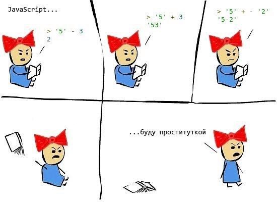

Обычный запрос в ChatGPT дает текст: совет, кусок кода или инструкцию. Дальше вы сами копируете, вставляете, чините ошибки и пытаетесь понять, куда это положить.
01
Что такое вайбкодинг
Вайбкодинг — это когда вы описываете задачу обычным языком, а AI-агент работает прямо в вашем проекте: ходит по папкам, читает контекст, создает и редактирует файлы, меняет код, запускает проверки и помогает довести идею до MVP.
“Вайб” здесь — это буквально вайбовать с задачей: держать в голове нужный результат, смотреть, что сделал агент, и докручивать, пока штука не заработает.
02
Для кого интенсив
Для тех, кто давно смотрит на вайбкодинг, но пока не понимает, как подступиться: куда нажимать, что писать агенту, как не сломать проект и как вообще довести идею до работающей штуки.
Интенсив подойдет, если вы хотите делать сайты, ботов, расширения и простые внутренние инструменты для себя, команды или клиентов, но не хотите заходить в классическую разработку на месяцы.

Опыт в программировании не нужен.
03
Что сможете делать после обучения?
Chrome-расширение
Например, прочитает все комментарии под роликом на YouTube и оценит позитив / негатив.
Сайт
Например, соберет прототип лендинга с розыгрышем для любого клиента.
Чат-бот
Например, будет каждый день мониторить тренды маркетинга и присылать короткую сводку.
Базы знаний
Например, заберет все архивные идеи, систематизирует их и будет хранить в одном месте.
Игра
Например, создаст антистресс-игру на 5 минут, чтобы перестать злиться на клиента.
Всё, на что хватит фантазии
От таск-менеджера для команды до личного мини-сервиса или внутреннего инструмента.
04
5 вебинаров
Урок 1 18:00-19:00
Вводное занятие
Ставим Visual Studio Code и Codex или Claude Code, разбираемся в интерфейсе и делаем первую задачу.
Урок 2 18:00-19:00
Расширение для браузера
Собираем простое Chrome-расширение и разбираемся, как агент работает с файлами, контекстом и git.
Урок 3 18:00-19:00
Собственный лендинг
Делаем одностраничный сайт, вносим изменения через агента, публикуем его и разбираем, когда нужна аренда VPS-сервера.
Урок 4 18:00-19:00
Telegram-бот
Собираем бота-помощника и подключаем внешние сервисы через API.
Урок 5 18:00-19:00
Финальный Q&A
Разбираем ошибки, отвечаем на вопросы, обсуждаем, как дальше учиться и собирать свои проекты.
Итого: настроите AI-агента, сделаете 3 проекта
и поймете, как продолжать дальше.
После каждого урока будет простая домашка на 10–30 минут — она легко впишется даже в самую жаркую рабочую неделю.
05
Кто ведет интенсив
Александр Кныш
Ex-директор по развитию продуктов в JAMI LUP. Руководитель инвестиционных проектов в Газпром-Медиа Холдинге.
@kknysh9+ лет в маркетинге и агентском бизнесе: запускал продукты, внедрял AI в рабочие процессы и работал с Lexus, Volkswagen, Skoda, Яндексом, Huawei, Honor, S7, МТС, Сбером, ВТБ, Yappy и другими брендами.
Сейчас использует вайбкодинг, чтобы быстро собирать MVP, прототипировать процессы и закрывать задачи без долгих подрядов.
Опыт спикера
LEXUS VOLKSWAGEN SKODA СБЕР ЯНДЕКС HUAWEI HONOR S7 МТС БИЛАЙН ВТБ YAPPY BOSCH И ДРУГИЕЦель занятия — провести участника от “я слышал про это” до “я понял механику и могу повторить сам”.
06
Результаты учеников
Александр Заклинский
Операционный директор рекламного агентства
- До:
- Уверенно пользовался ChatGPT и понимал, как устроены код, разработка и сервер, но не мог сам собрать это в рабочий инструмент.
- После:
- Собрал Telegram-бота для регистрации гостей и после интенсива сделал контент-завод.
Нужен был бот — сделал рабочую версию. Теперь такие задачи смогу закрывать сам.
Александр Кадыкеев
Генеральный директор студии разработки
- До:
- Много слышал про вайбкодинг и Claude, но из-за информационного шума откладывал первые тесты.
- После:
- Сделал несколько интерактивных брендовых игр, Chrome-расширение и свой сайт. Дальше будет применять подход в разработке и личных задачах.
Ценность в связке: ИИ и экспертиза, которая уже есть у меня и команды.
Игорь
Директор производства рекламного контента
- До:
- Уверенно пользовался ChatGPT в рабочих задачах, но не собирал свои инструменты для продакшена без разработчиков.
- После:
- Вайбкодит внутренний инструмент, который оптимизирует процесс продакшена для всей команды.
Самым ценным было не сделать конкретный сайт или бот, а вообще начать.
07
Условия
Цена за 1 человека
10 000 ₽
однодневный практический формат
Длительность
2 часа
одна встреча
Рекомендованный размер группы — от 5 до 15 человек.
Что входит
В стоимость входят: занятие в группе, настройка базового софта, практическая задача, разбор паттернов и ответы на вопросы.
Записаться и задать вопросы: @kknysh
Не входят: подписки на AI-сервисы и возможные расходы на сторонние инструменты.